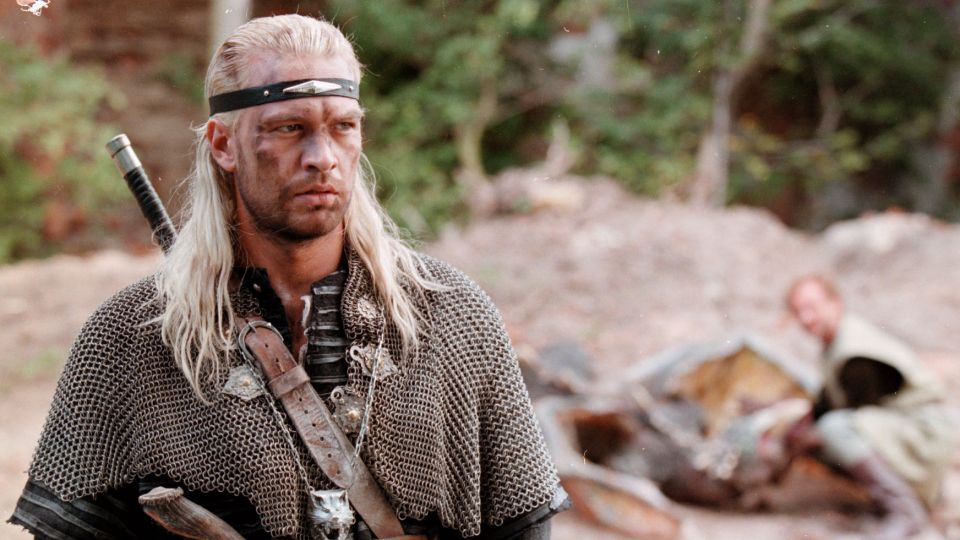
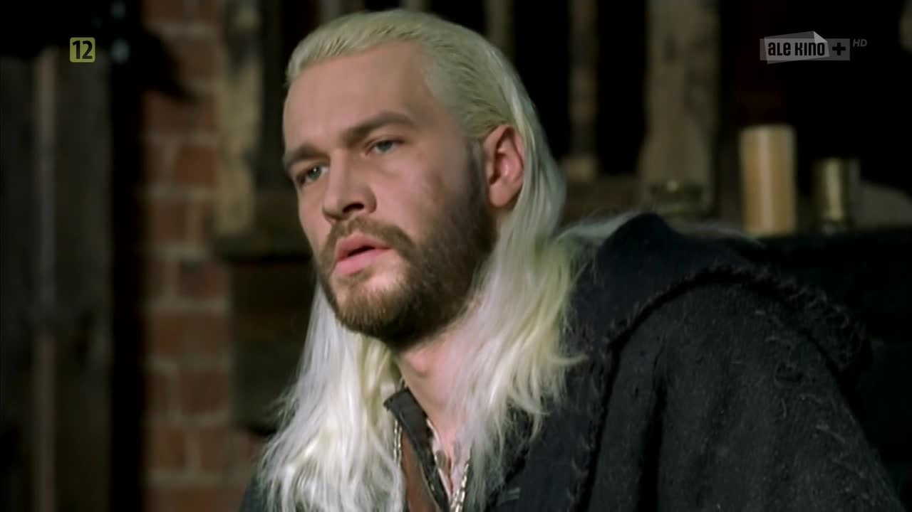
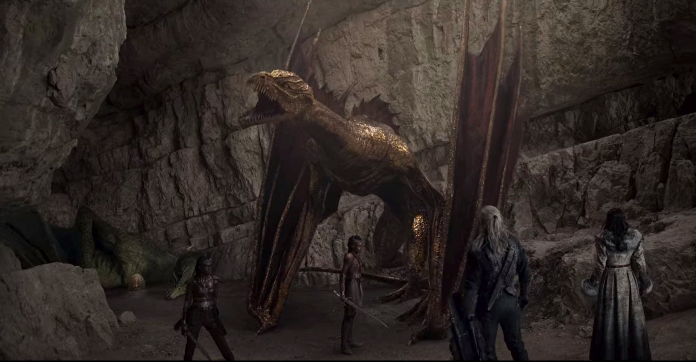
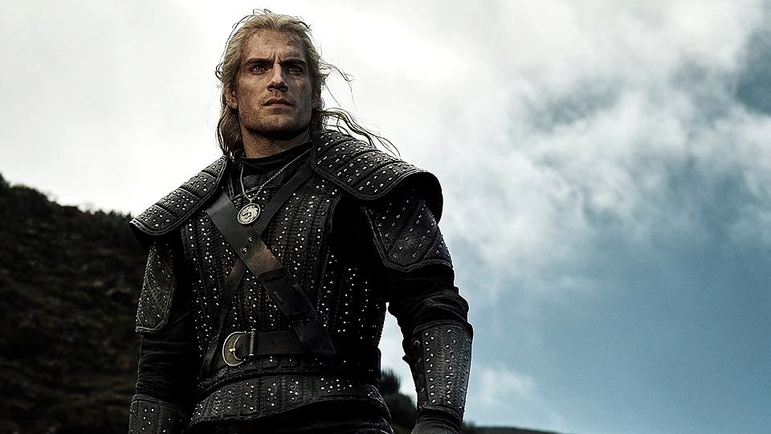

Seriale
"Wiedźmin" 22.09.2002
Osiemnaście lat temu Polacy nakręcili serial o wiedźminie. Odcinki były adaptacją opowiadań Andrzeja Sapkowskiego. W tytułową rolę wcielił się Michał Żebrowski. Serial nie został zbyt ciepło przyjęty przez widzów, jednak warto zaznaczyć, że była to pierwsza adaptacja przygód Geralta.


Po wiecej informacji zapraszam na FILMWEB
"The Witcher" 20.12.2019
W grudniu 2019 roku wyemitowany został pierwszy sezon serialu na platformie Netflix. Geralta zagrał Henry Cavill. Po premierze, książki i gry o Białym Wilku na nowo stały się bardzo popularne i seria przeżyła renesans. Obecnie trwają prace nad drugim sezonem.



Po więcej informacji zapraszam na FILMWEB oraz na oficjalną stronę serialu